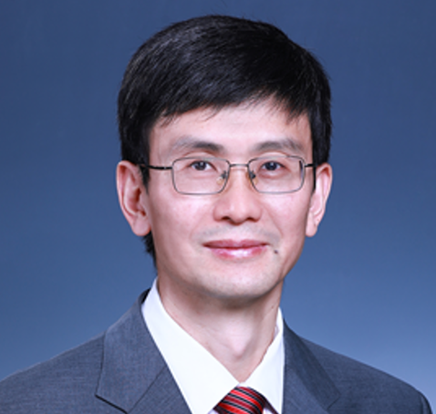

HIS 2026 @ Haikou, Hainan, China
Date: 11-14 November 2026

Full Professor, Beijing National Research Center for Information Science and Technology, Tsinghua University
Decoding the Rhythm of Life: Multimodal Large Models Redefining Full-Cycle Smart Healthcare
Against the backdrop of a continuously worsening global burden of chronic diseases and an uneven distribution of medical resources, medical AI is accelerating its evolution from "single-point auxiliary diagnosis within hospitals" to full-cycle health management encompassing "prevention-diagnosis-treatment-rehabilitation". However, there are three core bottlenecks: large models cannot deeply understand the semantic value of physiological time-series signals such as ECG and pulmonary function; generative medical AI carries fatal factual hallucination risks; and intelligent systems lack physician-like sequential decision-making and continuous evolution capabilities. Targeting the full-stack technical path of "multimodal alignment of physiological signals - trustworthy generation technology - clinical intelligent Agent - scenario-based implementation", it is necessary to solve core challenges such as large models being unable to "understand life signals", how to reduce the hallucination risk of medical generation at the mechanistic level so as to ensure clinical safety, and how to achieve sequential diagnosis and continuous iterative optimization in line with clinical thinking, while ensuring that multimodal large models can build a home care closed loop of "action assessment - physiological monitoring - risk warning - intelligent alerting."
BiographyYong Zhang is a Full Professor of Beijing National Research Center for Information Science and Technology, Tsinghua University. He received BSc, MSc and PhD degrees from Department of Computer Science and Technology, Tsinghua University. From 2002 to 2005, he did his Postdoc at Cambridge University, UK. He is a Distinguished Member of CCF. His research focuses on AI+DB, which integrates artificial intelligence with databases, enhancing performance via AI-driven optimization while leveraging databases to support efficient AI data processing and workflow integration. He has led or participated in a number of government projects or enterprise cooperation projects. He has published more than 200 academic papers in high-impact journals or conferences, with an H-index of 31. He has obtained 33 invention patents and 25 software copyrights. He serves as associate editor of two international journals. He won two awards: First Prize, Invention and Entrepreneurship Award - Innovation Award, China Association of Inventions (2023); Industry-University-Research Cooperation Innovation Award (Individual), China Industry-University-Research Cooperation Promotion Association (2021).